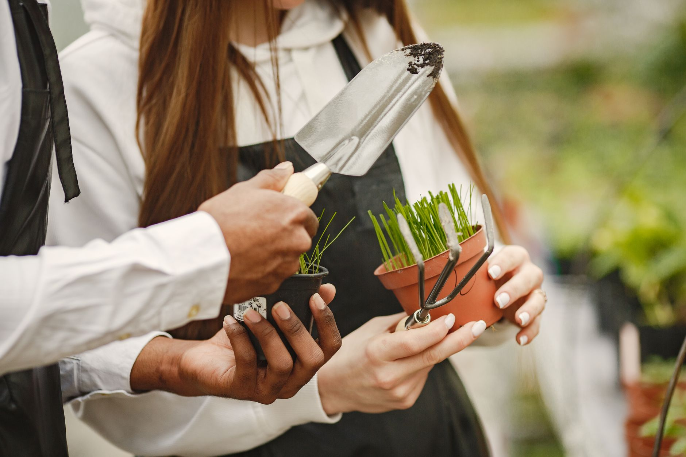

Green spaces
Community Gardens
We turn neglected land into shared gardens where neighbours grow food, friendships and fresh air together.

How it works
- Drop in to your nearest garden — no booking, just turn up.
- A volunteer host hands you tools and shows you the ropes.
- Take home what you grow, and help shape the next planting.